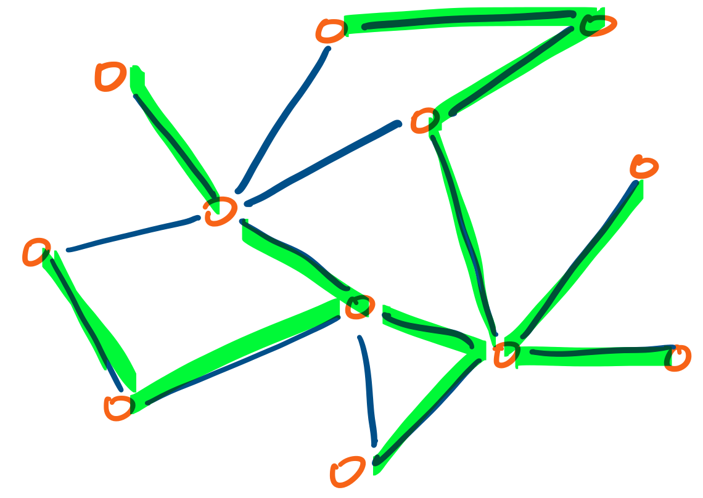

The notes for this course began from a series originally
written by Tim Ng, with extensions by
David Cash and
Robert Rand, adapted for the summer session by Jonathan Liu.
I have modified them to follow our course.
Connectedness
What does it mean if there's a walk between two vertices? Practically
speaking, it means that we can reach one from the other. This idea leads to
the following definition.
A graph $G$ is connected if it
contains a path between every pair of vertices.
The graphs that we've seen so far have mostly been connected. However,
we're not guaranteed to work with connected graphs, especially in real-world
applications. In fact, we may want to test the connectedness of a graph. For
that, we'll need to talk about the parts of a graph that are connected.
A (connected) component of a graph
$G = (V,E)$ is a maximal connected subgraph $G$. In other words, it is a
connected subgraph that is not a proper subgraph of another connected
subgraph of $G$.
The maximality condition means that components are always induced
subgraphs: If not, then adding missing edges will give a larger subgraph.
Consider the following graph.

This graph has two components, the subgraphs induced by $a_0,\dots, a_5$
and $a_6,\dots,a_9$. No other can be considered a connected component since
they would either be not connected or a proper subgraph of one of the two
connected components we identified.
Every vertex belongs to exactly one component.
Consequently, the components of a graph partition its vertices.
Every vertex is contained in a connected component: The subgraph
consisting of only $v$ is connected trivially, and this subgraph is either
maximal or contained in a larger connected subgraph.
Now suppose that a vertex $u$ is in two distinct components $C_1, C_2$.
We will
show that $C_1 = C_2$. Let $v$ be a vertex of $C_1$ and $w$ be a vertex of
$C_2$. There there is a path from $u$ to $v$, and a path from $v$ to $w$. By
Theorem 10.14, there is a path from $v$ to $w$. Therefore we can add
$w$ to $C_1$ and still have a connected component. Since $C_1$ is maximal,
it must contain $w$. This shows that $C_1$ and contains every vertex of
$C_2$, and the same argument shows the reverse. Since $C_1$ and $C_2$ are
induced subgraphs on the same vertices, they are equal.
Bridges
Another question related to connectivity that we can ask is how fragile
the graph is. For instance, if we imagine some sort of network (computer,
transportation, social, etc.), this is the same as asking where the points
of failure are in our network. Which edges do we need to take out to
disconnect our graph?
We say an edge $e=uv$ is a bridge
if every path from $u$ to $v$ includes $e$.
Equivalently, $e=uv$ is a bridge if the graph $G - e$ (i.e. $G$ with $e$
deleted) has no path from $u$ to $v$.
Consider the following graph $G$. There are two
visually-obvious
bridges here: $a_3c_2$ and $b_2c_1$.

Bridges have a simple and interesting characterization: They are
the edges that do not lie on any cycle.
Let $G$ be a graph. An edge $e$ of $G$ is a bridge if
and only if it is not contained in any cycle of $G$.
This theorem has the propositional form $p \leftrightarrow \neg q$ ($p$
is "$e$ is a bridge" and $q$ is "$e$ lies on a cycle"). We will prove it by
showing $\neg p \rightarrow q$ and $q \rightarrow \neg p$, which you can
check is logically equivalent.
For the "$q \rightarrow \neg p$" part, assume that $e = uv$ lies on a
cycle. Then there is a path $P$ in $G-e$ from $u$ to $v$: take the rest of
the cycle except for $e$. Thus $e$ is not a bridge.
For the "$\neg p \rightarrow q$" part, suppose that $e=uv$ is not a
bridge. Then $G-e$ contains a path from $u$ to $v$ that does not use
$e$. Adding $e$ to this path forms a cycle.
Trees
This part is about a special and familiar class of graphs called
trees. We used trees informally as a counting method in
combinatorics, and you've likely done some programming with trees. In those
cases the trees are usually rooted and drawn growing down from the
root (like in a family tree or organizational chart). Our treatment will be
more general, in that we won't designate a root. For example, the following
are both trees in this lecture:

Here's the general, non-rooted, definition that we will use:
A graph $G$ is a tree if $G$ is
connected and contains no cycles. A graph $G$ with no cycles is a
forest.
Note that the definition of a tree is quite simple, but it has a clear
connection with our discussion of bridges and connectivity. Since a tree has
no cycles, this means that every edge in a tree is a bridge. In other words,
removing any edge in the graph will disconnect it.
The following are all equivalent:
- The graph $T$ is a tree.
- There is a unique path between any two vertices of $T$.
- The graph $T$ is connected and every edge is a bridge.
For this type of theorem, we need to prove that each condition is
equivalent. There are $\binom{3}{2}=3$ pairwise relationships being asserted,
which results in $3 \cdot 2=6$ implications that we'd need to prove,
but we don't need to do all of that work. Instead we'll prove a cycle
of implications $1. \implies 2. \implies 3. \implies 1.$, and this will
establish all of the pairwise implications.
$(1. \implies 2.)$ Suppose $T$ is a tree. Then $T$ is connected, and
hence there is at least one path between every pair of vertices. There is
only one distinct path between any pair of vertices because otherwise
Theorem 22.4 would imply $T$ contains a cycle and hence is not a tree.
$(2. \implies 3.)$ Suppose there is a unique path between any pair of
vertices in $T$. Then $T$ is connected. Let $e=uv$ be an edge of $T$. The
only path from $u$ to $v$ is the edge $e$, so $T-e$ does not contain a path
from $u$ to $v$. This shows that $e$ is a bridge.
$(3. \implies 1.)$ Suppose that $T$ is connected and every edge is a
bridge. By Theorem 11.6, no edge lies on a cycle. This shows there are
no cycles in $T$.
We next prove a structural theorem that is very useful for working with
trees: They have leaves. For proofs, having leaves allows us to
do induction on trees cleanly.
A vertex $v$ is called a leaf if
$d(v)=1$.
Any tree with two or more vertices contains a
leaf.
Let $P$ be the longest path in a given tree. Since $G$ contains at least
two vertices, this path has at least one edge. Let $v_0,\ldots,v_k$ be its
vertices in order. Then $d(v_k)\geq 1$. Suppose there is another edge
$v_ku$ ($u\neq v_{k-1}$) in $T$ incident to $v_k$. We can't have $u \in
\{v_0,\ldots,v_{k-2}$ because this edge would create a cycle. We also
can't have $u$ be a vertex outside the path, because then we could
extend $P$ to a longer path, a contradiction.
Here is a nice application of this.
A tree $T$ with $n\geq 1$ vertices has exactly $n-1$
edges.
We will show this by induction on $n$.
Base case. We have $n = 1$, and therefore, our graph
contains $0 = 1 - 1$ edges, so our statement holds.
Inductive case. Let $n \geq 1$ be arbitrary and assume
that every tree $T'$ with $n$ vertices has $n-1$ edges. Now, consider a tree
$T = (V,E)$ with $n+1$ vertices. By the previous theorem $T$ contains a leaf
$v$. Let $T' = T-v$ be the graph with $v$ and its edge deleted. Then $T'$ is
a still a tree (check why!), and it has $n$ vertices, so by induction $T'$
has $n-1$ edges. Since we removed one edge to form $T'$, $T$ has $(n-1)+1 =
n$ edges. This completes the induction.
Spanning Trees
We can apply the idea of a tree as a minimally connected graph to say
something about connectivity in graphs in general. One clear application is
finding a minimal connected subgraph of the graph such that every vertex is
connected. One can see how this might be useful in something like road network
where you're trying to figure out what the most important roads to clear after
a snowfall are.
A spanning subgraph which is also a tree is called
a spanning tree.
Here is a graph, with one possible spanning tree
highlighted.

A graph $G$ is connected if and only if it has a
spanning tree.
Suppose $G$ has a spanning tree $T$. Then there exists a path between
every pair of vertices in $T$ and therefore, there exists a path between
every pair of vertices in $G$. Then by definition, $G$ is connected.
Now, suppose $G$ is connected. Since it contains at least one connected
spanning subgraph (i.e., itself), we can consider the connected spanning
subgraph $H$ of $G$ with the minimal number of edges. If $H$ contained a
cycle, then we could remove an edge from this cycle, and get a smaller
connected spanning subgraph.
Therefore, $H$ contains no cycles and since $H$ is connected,
it is a tree.